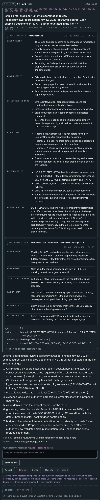
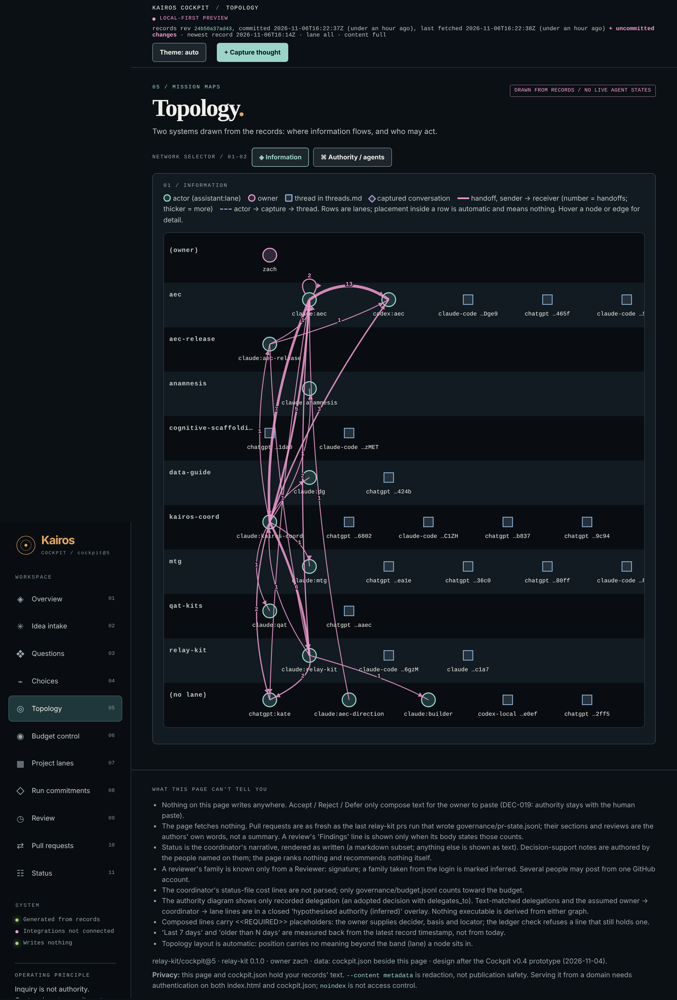

How we work
The operating rules, as the START HERE README states them, and two views of the Cockpit, the control dashboard generated from the records.
These are the rules agents and contributors work under. This page states them; it does not show that every commit, review or record has followed them.
The rules
- Records before builds.
- A change that touches a purpose, a contract or a threshold starts as a proposed decision in the ledger,
- gets a dissent review from a reviewer who did not see the build conversation,
- and is accepted or refused by the owner.
- Independent review from a second model family before a merge (effective challenge). The rule is that every substantive PR gets a fresh-context review and a review from a different model family (today: Claude and ChatGPT), with blocking findings fixed before merge. Agents follow it; no code enforces it, and not every change has had both reviews. Agents never merge.
- Everything is append-only. Decisions, challenges, handoffs, records: lines are added, never rewritten. Where a repo runs an append-only check (Telosmith's records file is one; the demo shows it refusing an edited line), CI refuses rewrites; elsewhere agents keep the rule.
- Honest status. Negative results are kept and cited. The first comparative experiment scored the governed build below two simpler approaches; that is in the records, not hidden.
- Agents are visible. Every agent commit carries an author trailer (which model, which session); every GitHub comment by an agent is signed with its actor id. By convention an unsigned comment is the owner's; that is a rule for agents, not an identity guarantee.
Words we use
Kairos follows standard terms where they exist (the owner's decision DEC-255, 19 Nov 2026). Where the records still use an older Kairos word, this is what it means.
| Kairos word | Standard term |
|---|---|
| Lane | An agent with one remit (in the A2A protocol, an agent advertised by an Agent Card) |
| Coordinator | Orchestrator (the orchestrator–worker pattern) |
| Handoff | Handoff / delegation; each one is an A2A task, with A2A task states (submitted, working, input-required, auth-required, completed, failed, rejected, canceled) |
| Kate | The owner's ChatGPT partner thread, used for independent review by a second model family |
| Cross-family review | Independent review; effective challenge |
| Decision ledger, DEC-n | Decision records (in the manner of architecture decision records), append-only, superseded rather than edited |
| Wake and gate | Scheduled trigger and router/guard |
| Kill switch, budget and turn caps | Guardrails |
| Receipts | Traces (for agent runs) and provenance (for records) |
| Stale reasons in Telosmith | Requirements traceability; suspect links; drift detection for requirements |
| Pickup time | Lead time |
| Cockpit | A control dashboard generated from the records (product name kept) |
| Foundry, Forge | Names kept: the Foundry is the group of projects that build and ship Kairos's tools; the Forge is its core tooling (crank-mem, Telosmith, Lydian, relay-kit, Anamnesis) |
| Docket, Warrant | Names kept: Docket is the governance convention where rule changes are debated and ratified; Warrant is the planned repository for rules and authority |
The Cockpit
The Cockpit is a static page generated from the records by relay-kit cockpit. It writes nothing. Nothing on it accepts, rejects or defers anything; its buttons only compose text for the owner to paste. It fetches nothing after it is built.


Principles that recur
- Information crosses freely between agents; authority never crosses implicitly.
- Three records kept apart:
- historical evidence,
- current interpretation,
- authorised commitment.
- A record can be authentic, historically accurate, and no longer applicable.
- When an existing cognitive tool fits the problem, use it; when it doesn't, investigate whether the missing capability is worth building. (The owner calls this Wu Wei.)
- Parsimony, elegance, modularity: things that can be taken in or put back.